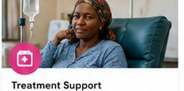
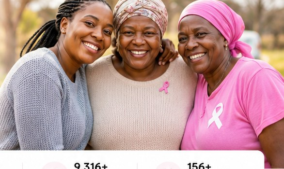
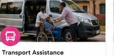
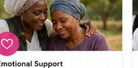
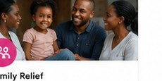
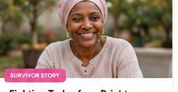
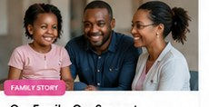
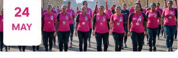
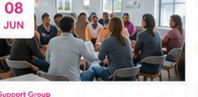
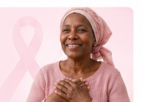

✚
Treatment Support
We help cover medical costs, medication, and essential treatment needs.
Learn more →Together, we provide treatment support, transport, and care for cancer patients and their families across South Africa.

Practical, compassionate support for people facing cancer and the families walking beside them.

We help cover medical costs, medication, and essential treatment needs.
Learn more →
Safe transport to hospitals and treatment centres for patients travelling long distances.
Learn more →
Counselling, encouragement and support groups for patients and caregivers.
Learn more →
Food parcels, school support and basic household needs for families under pressure.
Learn more → Treatment
TreatmentThandi is a mother of two fighting breast cancer. Let’s help her finish treatment.
 Transport
TransportHelp us provide transport for patients travelling long distances for treatment.
 Children
ChildrenCare parcels, nutrition and emotional support for young warriors.

Survivor StoryAfter a diagnosis, Nomsa found strength through faith and community.
Read more →
Family StoryA family rallies around their loved one during treatment.
Read more → Volunteer Story
Volunteer Story
24MAY
08JUNEvery rand you give brings hope, healing, and dignity to someone who needs it.
